CODING AGENTS AS PIXEL WORLD MODELS
traex/DeepSeek-V4.1-Flash · phygen_144
点击播放 · 原生 RGB 像素
逐轮保存的候选
回放视频、检查图与代码变化。
每份候选均可单独播放。实际图片检查记录在下方工具轨迹中。
候选 01播放与检查图
点击播放 · 原生 RGB 像素
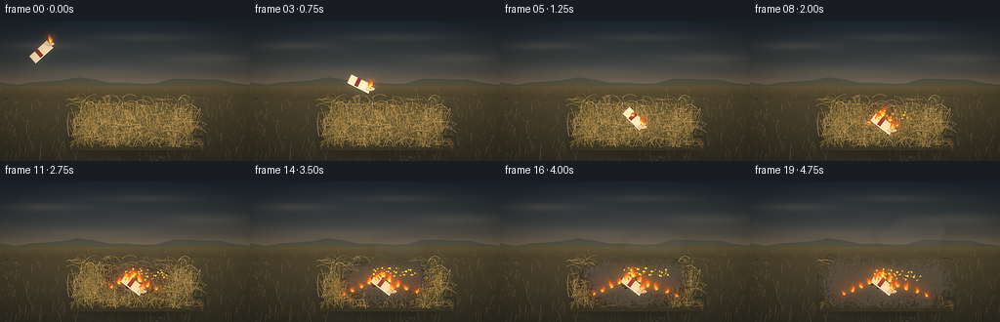
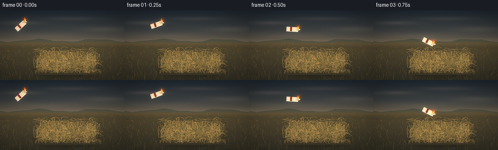
展开代码变化
--- 上一保存版本
+++ 本次保存版本
@@ -0,0 +1,539 @@
+from __future__ import annotations
+
+import math
+from pathlib import Path
+
+import cv2
+import numpy as np
+from PIL import Image, ImageDraw, ImageFilter
+
+import artifact_io
+
+
+W, H = 256, 144
+N, FPS = 20, 4.0
+SS = 4
+CW, CH = W * SS, H * SS
+CASE_DIR = Path(__file__).resolve().parent
+RNG = np.random.default_rng(144)
+
+
+def rgb(value):
+ return tuple(int(v) for v in value)
+
+
+def mix(a, b, t):
+ return tuple(int(round(a[i] * (1.0 - t) + b[i] * t)) for i in range(3))
+
+
+def clamp01(value):
+ return max(0.0, min(1.0, value))
+
+
+def smoothstep(edge0, edge1, value):
+ x = clamp01((value - edge0) / max(1e-6, edge1 - edge0))
+ return x * x * (3.0 - 2.0 * x)
+
+
+def sp(x, y):
+ return (int(round(x * SS)), int(round(y * SS)))
+
+
+def radial_glow(size, center, radius, color, strength=1.0):
+ w, h = size
+ x0 = max(0, int(center[0] - radius))
+ y0 = max(0, int(center[1] - radius))
+ x1 = min(w, int(center[0] + radius + 1))
+ y1 = min(h, int(center[1] + radius + 1))
+ if x1 <= x0 or y1 <= y0:
+ return None, (0, 0)
+ yy, xx = np.mgrid[y0:y1, x0:x1]
+ dist = np.sqrt((xx - center[0]) ** 2 + (yy - center[1]) ** 2)
+ alpha = np.clip(1.0 - dist / max(radius, 1e-3), 0.0, 1.0) ** 2
+ alpha *= strength
+ layer = np.zeros((y1 - y0, x1 - x0, 4), dtype=np.uint8)
+ layer[..., :3] = color
+ layer[..., 3] = np.clip(alpha * 255, 0, 255).astype(np.uint8)
+ return Image.fromarray(layer, "RGBA"), (x0, y0)
+
+
+def add_glow(base, center, radius, color, strength):
+ glow, offset = radial_glow(base.size, center, radius, color, strength)
+ if glow is not None:
+ base.alpha_composite(glow, dest=offset)
+
+
+def make_sky():
+ y = np.arange(CH, dtype=np.float32)[:, None]
+ yn = y / (CH - 1)
+ top = np.array([32, 43, 52], dtype=np.float32)
+ mid = np.array([93, 91, 79], dtype=np.float32)
+ low = np.array([180, 142, 96], dtype=np.float32)
+ t1 = np.clip(yn / 0.60, 0, 1)[..., None]
+ t2 = np.clip((yn - 0.28) / 0.50, 0, 1)[..., None]
+ sky = top * (1 - t1) + mid * t1
+ sky = sky * (1 - t2 * 0.62) + low * (t2 * 0.62)
+ sky = np.repeat(sky, CW, axis=1)
+
+ # Soft, dusty cloud bands with a few cooler undersides.
+ yy, xx = np.mgrid[0:CH, 0:CW]
+ clouds = np.zeros((CH, CW), dtype=np.float32)
+ for cx, cy, rx, ry, amp in [
+ (0.18, 0.18, 0.24, 0.045, 0.55),
+ (0.58, 0.12, 0.32, 0.040, 0.40),
+ (0.84, 0.27, 0.28, 0.055, 0.50),
+ (0.34, 0.37, 0.38, 0.050, 0.33),
+ ]:
+ d = ((xx / CW - cx) / rx) ** 2 + ((yy / CH - cy) / ry) ** 2
+ clouds += amp * np.exp(-d * 2.3)
+ clouds = np.clip(clouds, 0, 1)[..., None]
+ cloud_rgb = np.array([183, 163, 134], dtype=np.float32)
+ sky = sky * (1 - clouds * 0.30) + cloud_rgb * (clouds * 0.30)
+ return Image.fromarray(np.clip(sky, 0, 255).astype(np.uint8), "RGB").convert("RGBA")
+
+
+def draw_background():
+ img = make_sky()
+ d = ImageDraw.Draw(img, "RGBA")
+
+ # Low, muted ridge lines separate the sky from the dry field.
+ horizon = 60
+ far = [(0, horizon + 3)]
+ for i in range(17):
+ x = i * W / 16
+ y = horizon + 2 + 2.8 * math.sin(i * 0.85 + 0.5) + 1.2 * math.sin(i * 2.1)
+ far.append((x, y))
+ far += [(W, horizon + 8), (W, H), (0, H)]
+ d.polygon([sp(x, y) for x, y in far], fill=(67, 72, 59, 255))
+
+ near = [(0, horizon + 7)]
+ for i in range(19):
+ x = i * W / 18
+ y = horizon + 8 + 4.5 * math.sin(i * 0.63 + 2.0) + 1.4 * math.sin(i * 1.9)
+ near.append((x, y))
+ near += [(W, H), (0, H)]
+ d.polygon([sp(x, y) for x, y in near], fill=(74, 72, 52, 255))
+
+ # Field base: warm olive-brown with a slightly cooler shadowed foreground.
+ yy = np.arange(CH, dtype=np.float32)[:, None] / (CH - 1)
+ field_top = np.array([112, 96, 58], dtype=np.float32)
+ field_bottom = np.array([54, 52, 39], dtype=np.float32)
+ field = field_top[None, None, :] * (1 - yy[..., None]) + field_bottom[None, None, :] * yy[..., None]
+ field = np.repeat(field, CW, axis=1)
+ mask = Image.new("L", (CW, CH), 0)
+ md = ImageDraw.Draw(mask)
+ md.polygon([sp(0, horizon + 7), sp(W, horizon + 7), sp(W, H), sp(0, H)], fill=255)
+ img.paste(Image.fromarray(np.clip(field, 0, 255).astype(np.uint8), "RGB"), (0, 0), mask)
+
+ # Sparse field grass, denser toward the frame edges.
+ field_blades = []
+ for _ in range(720):
+ x = float(RNG.uniform(-2, W + 2))
+ y = float(RNG.uniform(horizon + 12, H + 3))
+ edge_bias = abs(x / W - 0.5)
+ if RNG.random() > 0.35 + 0.75 * edge_bias:
+ continue
+ length = float(RNG.uniform(2.0, 9.0) * (0.45 + (y - horizon) / 95))
+ lean = float(RNG.normal(0.0, 2.4))
+ tone = int(RNG.integers(0, 4))
+ field_blades.append((x, y, length, lean, tone))
+ palette = [(112, 97, 54), (132, 108, 57), (88, 83, 48), (151, 122, 67)]
+ for x, y, length, lean, tone in field_blades:
+ p0 = sp(x, y)
+ p1 = sp(x + lean * 0.35, y - length * 0.55)
+ p2 = sp(x + lean, y - length)
+ d.line([p0, p1, p2], fill=(*palette[tone], 150), width=max(1, int(SS * 0.45)))
+
+ # A few small stones and clods for scale.
+ for _ in range(34):
+ x = float(RNG.uniform(2, W - 2))
+ y = float(RNG.uniform(horizon + 19, H - 1))
+ r = float(RNG.uniform(0.5, 2.1))
+ col = tuple(int(v) for v in RNG.integers(48, 83, size=3))
+ d.ellipse([sp(x - r, y - r * 0.45), sp(x + r, y + r * 0.55)], fill=(*col, 135))
+
+ # Dust haze close to the horizon.
+ haze = Image.new("RGBA", (CW, CH), (0, 0, 0, 0))
+ hd = ImageDraw.Draw(haze)
+ hd.rectangle([sp(0, horizon - 4), sp(W, horizon + 15)], fill=(184, 151, 105, 32))
+ haze = haze.filter(ImageFilter.GaussianBlur(SS * 4))
+ img.alpha_composite(haze)
+ return img
+
+
+BG = draw_background()
+
+
+def bezier(points, steps=10):
+ pts = np.asarray(points, dtype=np.float32)
+ ts = np.linspace(0, 1, steps, dtype=np.float32)
+ curve = []
+ for t in ts:
+ layer = pts.copy()
+ while len(layer) > 1:
+ layer = layer[:-1] * (1.0 - t) + layer[1:] * t
+ curve.append(layer[0])
+ return np.asarray(curve)
+
+
+def make_pile_blades():
+ blades = []
+ # Roots and tips live in normalized scene coordinates. The dense pile forms
+ # a broad, low haystack with irregular silhouette and projecting straw.
+ for _ in range(1050):
+ u = RNG.random()
+ root_x = 78 + 120 * u + RNG.normal(0, 3.0)
+ crown = 72 + 16 * abs((root_x - 138) / 61) ** 1.55 + RNG.normal(0, 3.2)
+ root_y = RNG.uniform(99, 130)
+ if root_y < crown:
+ root_y = crown + RNG.uniform(0, 8)
+ length = RNG.uniform(7, 24) * (0.75 + 0.35 * RNG.random())
+ lean = RNG.normal(0, 5.0)
+ spread = RNG.normal(0, 2.6)
+ p0 = (root_x, root_y)
+ p1 = (root_x + lean * 0.45 + spread, root_y - length * 0.48)
+ p2 = (root_x + lean, root_y - length)
+ blades.append((p0, p1, p2, int(RNG.integers(0, 5)), RNG.uniform(0.45, 1.0)))
+
+ # Longer, more horizontal strands give the pile a tangled straw character.
+ for _ in range(430):
+ x = RNG.uniform(74, 205)
+ y = RNG.uniform(79, 130)
+ span = RNG.uniform(4, 17)
+ dy = RNG.normal(0, 3.0)
+ p0 = (x - span / 2, y)
+ p1 = (x, y + dy - RNG.uniform(1.5, 5.0))
+ p2 = (x + span / 2, y + RNG.normal(0, 2.0))
+ blades.append((p0, p1, p2, int(RNG.integers(0, 5)), RNG.uniform(0.35, 0.9)))
+ return blades
+
+
+PILE_BLADES = make_pile_blades()
+
+
+def ignition_time(x, y):
+ # Fire starts under the fallen candle and crawls outward through the pile.
+ d = math.hypot((x - 136.0) / 1.05, (y - 103.0) / 0.58)
+ noise = 0.16 * math.sin(x * 0.31 + y * 0.17) + 0.10 * math.sin(x * 0.13 - y * 0.39)
+ return 5.1 + d * 0.19 + noise
+
+
+def pile_color(tone, burn):
+ dry = [
+ (135, 111, 60),
+ (167, 135, 71),
+ (112, 96, 54),
+ (190, 154, 83),
+ (92, 83, 49),
+ ][tone]
+ char = (46, 38, 31)
+ ash = (91, 82, 67)
+ if burn < 0.58:
+ return mix(dry, char, burn / 0.58)
+ return mix(char, ash, (burn - 0.58) / 0.42)
+
+
+def draw_pile(img, frame):
+ d = ImageDraw.Draw(img, "RGBA")
+ time = frame
+ # Contact shadow under the pile.
+ shadow = Image.new("RGBA", (CW, CH), (0, 0, 0, 0))
+ sd = ImageDraw.Draw(shadow)
+ sd.ellipse([sp(72, 112), sp(207, 137)], fill=(20, 21, 16, 105))
+ shadow = shadow.filter(ImageFilter.GaussianBlur(SS * 5))
+ img.alpha_composite(shadow)
+
+ # Low mound silhouette, layered so individual straw reads above it.
+ mound = []
+ for i in range(42):
+ x = 73 + i * (136 / 41)
+ y = 126 - 39 * math.exp(-((x - 138) / 52) ** 4) + 2.5 * math.sin(i * 1.7)
+ mound.append((x, y))
+ mound += [(207, 132), (72, 132)]
+ d.polygon([sp(x, y) for x, y in mound], fill=(91, 77, 45, 255))
+
+ # Cooler shaded underside and a warm sunlit crown.
+ d.polygon([sp(82, 115), sp(196, 114), sp(207, 133), sp(72, 133)], fill=(64, 58, 40, 255))
+ for i in range(180):
+ x = RNG.uniform(83, 195)
+ y = RNG.uniform(84, 126)
+ d.ellipse([sp(x - 1.5, y - 0.7), sp(x + 1.5, y + 0.8)], fill=(109, 86, 49, 30))
+
+ # Draw blades from back to front.
+ for p0, p1, p2, tone, alpha in PILE_BLADES:
+ burn = smoothstep(ignition_time(p0[0], p0[1]), ignition_time(p0[0], p0[1]) + 2.1, time)
+ col = pile_color(tone, burn)
+ width = max(1, int(SS * (0.42 + 0.26 * alpha)))
+ pts = bezier([p0, p1, p2], 7)
+ d.line([sp(x, y) for x, y in pts], fill=(*col, int(190 * alpha + 35)), width=width)
+
+ # Dark, charred holes around the initial landing point.
+ if frame >= 6:
+ b = smoothstep(6, 12, frame)
+ for _ in range(70):
+ a = RNG.uniform(0, math.tau)
+ r = RNG.uniform(0, 13) * b
+ x = 135 + math.cos(a) * r
+ y = 103 + math.sin(a) * r * 0.55
+ rr = RNG.uniform(0.5, 1.5)
+ d.ellipse([sp(x - rr, y - rr * 0.5), sp(x + rr, y + rr * 0.6)],
+ fill=(35, 29, 23, int(150 * b)))
+
+
+def candle_pose(frame):
+ if frame <= 4:
+ t = frame / 4.0
+ x = 42 + (136 - 42) * t
+ y = 32 + 70 * t - 28 * math.sin(math.pi * t)
+ angle = math.radians(-42 + 91 * t)
+ return x, y, angle, True
+ settle = min(1.0, (frame - 4) / 4.0)
+ x = 136 + 2.2 * math.sin((frame - 4) * 1.7) * (1 - settle)
+ y = 104 - 4.0 * math.sin(min(1.0, (frame - 4) / 2.0) * math.pi) + 1.5 * settle
+ angle = math.radians(49 - 12 * settle)
+ return x, y, angle, False
+
+
+def candle_geometry(x, y, angle):
+ length, width = 24.0, 9.2
+ ca, sa = math.cos(angle), math.sin(angle)
+ axis = np.array([ca, sa])
+ normal = np.array([-sa, ca])
+ center = np.array([x, y])
+ a = center - axis * length / 2
+ b = center + axis * length / 2
+ corners = [a - normal * width / 2, b - normal * width / 2,
+ b + normal * width / 2, a + normal * width / 2]
+ return center, axis, normal, a, b, corners
+
+
+def draw_flame(d, base, height, width, phase, intensity=1.0, alpha=255):
+ bx, by = base
+ if height <= 0.8:
+ return
+ for layer, scale, color in [
+ (0, 1.00, (222, 70, 21)),
+ (1, 0.70, (255, 139, 27)),
+ (2, 0.39, (255, 222, 94)),
+ ]:
+ pts = []
+ steps = 22
+ for i in range(steps + 1):
+ t = i / steps
+ half = width * scale * 0.5 * (1.0 - t) ** 0.66 * (0.62 + 0.38 * math.sin(math.pi * t))
+ sway = (1.7 * math.sin(phase + t * 5.2) + 0.7 * math.sin(phase * 1.7 + t * 9.1)) * t
+ x = bx + sway
+ y = by - height * scale * t
+ pts.append((x - half, y))
+ for i in range(steps, -1, -1):
+ t = i / steps
+ half = width * scale * 0.5 * (1.0 - t) ** 0.66 * (0.62 + 0.38 * math.sin(math.pi * t))
+ sway = (1.7 * math.sin(phase + t * 5.2) + 0.7 * math.sin(phase * 1.7 + t * 9.1)) * t
+ pts.append((bx + sway + half, by - height * scale * t))
+ d.polygon([sp(px, py) for px, py in pts], fill=(*color, int(alpha * intensity)))
+
+
+def draw_candle(img, frame):
+ x, y, angle, airborne = candle_pose(frame)
+ center, axis, normal, a, b, corners = candle_geometry(x, y, angle)
+ top = b
+ d = ImageDraw.Draw(img, "RGBA")
+
+ # Warm halo and ground lighting from the candle's flame.
+ flame_base = top + normal * 0.4 - np.array([0.0, 1.5])
+ flicker = 0.91 + 0.09 * math.sin(frame * 2.7 + 0.4)
+ flame_h = (8.2 if airborne else 9.0) * flicker
+ add_glow(img, sp(flame_base[0], flame_base[1] - flame_h * 0.42),
+ SS * (12.0 if airborne else 13.5), (255, 116, 31), 0.32)
+ d = ImageDraw.Draw(img, "RGBA")
+
+ # Motion trail and loose smoke in the airborne portion.
+ if airborne:
+ trail = Image.new("RGBA", (CW, CH), (0, 0, 0, 0))
+ td = ImageDraw.Draw(trail)
+ for k in range(1, 5):
+ tx = x - k * 6.5
+ ty = y + 3.0 * math.sin(k * 1.3 + frame)
+ td.ellipse([sp(tx - 1.1, ty - 0.8), sp(tx + 1.1, ty + 0.8)],
+ fill=(213, 179, 124, 30 - k * 4))
+ trail = trail.filter(ImageFilter.GaussianBlur(SS * 1.4))
+ img.alpha_composite(trail)
+ d = ImageDraw.Draw(img, "RGBA")
+
+ # Shadowed side of the wax body.
+ shadow_pts = [corners[2], corners[3], corners[0], a + normal * 0.6]
+ d.polygon([sp(px, py) for px, py in shadow_pts], fill=(151, 128, 94, 255))
+ # Main ivory body.
+ body = [corners[0], corners[1], corners[2], corners[3]]
+ d.polygon([sp(px, py) for px, py in body], fill=(228, 205, 162, 255))
+ # Narrow red wax band makes the small object legible at low resolution.
+ band_a = center - axis * 4.5
+ band_b = center - axis * 0.7
+ band = [band_a - normal * 4.6, band_b - normal * 4.6,
+ band_b + normal * 4.6, band_a + normal * 4.6]
+ d.polygon([sp(px, py) for px, py in band], fill=(132, 45, 34, 255))
+ # Bright edge and top rim.
+ d.line([sp(*corners[3]), sp(*corners[2])], fill=(255, 237, 194, 220), width=SS)
+ d.ellipse([sp(top[0] - 4.6, top[1] - 1.9), sp(top[0] + 4.6, top[1] + 1.9)],
+ fill=(242, 220, 177, 255), outline=(152, 125, 86, 255), width=SS // 2)
+ d.ellipse([sp(top[0] - 3.1, top[1] - 1.0), sp(top[0] + 3.1, top[1] + 1.0)],
+ fill=(205, 178, 128, 255))
+ # Wick.
+ wick_tip = top - normal * 1.0 - axis * 0.8 + np.array([0, -2.6])
+ d.line([sp(top[0], top[1] - 0.5), sp(wick_tip[0], wick_tip[1])],
+ fill=(38, 30, 23, 255), width=max(1, SS // 2))
+
+ # Flame stays upright even while the candle tumbles.
+ draw_flame(d, (flame_base[0], flame_base[1] - 0.7), flame_h, 5.3, frame * 1.4, 1.0, 245)
+ add_glow(img, sp(flame_base[0], flame_base[1] - 1.8), SS * 5.4,
+ (255, 205, 92), 0.28)
+
+
+def flame_sites(frame):
+ if frame < 5:
+ return []
+ sites = []
+ # Main candle ignition plus neighboring straw tongues.
+ for i, (x, y, base_h, base_w, phase, onset) in enumerate([
+ (136, 98, 9.5, 7.5, 0.1, 5.0),
+ (130, 101, 8.2, 6.3, 1.8, 5.7),
+ (143, 103, 9.0, 6.8, 2.7, 6.1),
+ (122, 105, 7.8, 5.7, 4.1, 7.0),
+ (151, 108, 8.7, 6.1, 5.3, 7.8),
+ (114, 109, 7.0, 5.0, 6.2, 9.0),
+ (160, 111, 7.5, 5.4, 7.1, 9.8),
+ (105, 113, 6.2, 4.6, 8.5, 11.3),
+ (171, 114, 6.4, 4.8, 9.7, 12.2),
+ (96, 116, 5.4, 4.0, 10.8, 13.7),
+ (181, 118, 5.8, 4.2, 12.0, 14.6),
+ ]):
+ if frame >= onset:
+ grow = smoothstep(onset, onset + 3.8, frame)
+ pulse = 0.82 + 0.18 * math.sin(frame * 1.65 + phase)
+ h = base_h * (0.45 + 0.75 * grow) * pulse
+ w = base_w * (0.65 + 0.35 * grow)
+ sites.append((x, y, h, w, phase))
+ return sites
+
+
+def draw_fire(img, frame):
+ if frame < 5:
+ return
+ d = ImageDraw.Draw(img, "RGBA")
+ sites = flame_sites(frame)
+
+ # Heat bloom behind the fire.
+ heat = Image.new("RGBA", (CW, CH), (0, 0, 0, 0))
+ hd = ImageDraw.Draw(heat)
+ for x, y, h, w, phase in sites:
+ strength = smoothstep(5, 10, frame)
+ hd.ellipse([sp(x - 15, y - 15), sp(x + 15, y + 5)],
+ fill=(255, 101, 24, int(30 * strength)))
+ heat = heat.filter(ImageFilter.GaussianBlur(SS * 8))
+ img.alpha_composite(heat)
+ d = ImageDraw.Draw(img, "RGBA")
+
+ # Flames are drawn from back to front, then hot cores are added.
+ for x, y, h, w, phase in sorted(sites, key=lambda q: q[1]):
+ draw_flame(d, (x, y), h, w, phase + frame * 0.43, 0.98, 245)
+ for x, y, h, w, phase in sites:
+ add_glow(img, sp(x, y - h * 0.30), SS * (h * 0.80 + 4),
+ (255, 124, 34), 0.18)
+
+ # Embers and sparks around the spreading front.
+ d = ImageDraw.Draw(img, "RGBA")
+ for i in range(38):
+ onset = 5.5 + (i % 9) * 0.55
+ if frame < onset:
+ continue
+ age = frame - onset
+ px = 124 + (i * 17 % 44) + math.sin(i * 2.1 + frame) * 3 + age * 0.5
+ py = 103 - (age * 2.2) - (i % 5) * 1.7 + 0.16 * age * age
+ size = 0.35 + (i % 3) * 0.25
+ d.ellipse([sp(px - size, py - size), sp(px + size, py + size)],
+ fill=(255, int(165 + 50 * RNG.random()), 50, int(220 * (1 - age / 15))))
+
+
+def draw_smoke(img, frame):
+ if frame < 6:
+ return
+ layer = Image.new("RGBA", (CW, CH), (0, 0, 0, 0))
+ d = ImageDraw.Draw(layer, "RGBA")
+ growth = smoothstep(6, 17, frame)
+ for i in range(34):
+ onset = 6 + (i % 8) * 0.75
+ if frame < onset:
+ continue
+ age = frame - onset
+ x = 137 + (i % 7 - 3) * 6 + age * (2.2 + (i % 3) * 0.5)
+ y = 91 - age * (3.1 + (i % 4) * 0.4) + 2.1 * math.sin(i + frame * 0.45)
+ r = 4.0 + age * (0.85 + 0.1 * (i % 3))
+ alpha = int(18 + 20 * growth)
+ col = (112, 107, 94) if i % 3 else (88, 91, 87)
+ d.ellipse([sp(x - r, y - r * 0.72), sp(x + r, y + r * 0.75)],
+ fill=(*col, alpha))
+ layer = layer.filter(ImageFilter.GaussianBlur(SS * 3.8))
+ img.alpha_composite(layer)
+
+
+def draw_dust(img, frame):
+ if frame < 4 or frame > 9:
+ return
+ layer = Image.new("RGBA", (CW, CH), (0, 0, 0, 0))
+ d = ImageDraw.Draw(layer, "RGBA")
+ age = frame - 4
+ for i in range(24):
+ a = i / 24 * math.tau
+ x = 134 + math.cos(a) * (3 + age * 1.7) + RNG.normal(0, 1.0)
+ y = 104 + math.sin(a) * (1.5 + age * 0.7) - age * 0.7
+ r = 1.2 + (i % 4) * 0.7
+ d.ellipse([sp(x - r, y - r * 0.6), sp(x + r, y + r * 0.65)],
+ fill=(156, 132, 91, max(0, 90 - age * 15)))
+ layer = layer.filter(ImageFilter.GaussianBlur(SS * 1.2))
+ img.alpha_composite(layer)
+
+
+def postprocess(img, frame):
+ arr = np.asarray(img.convert("RGB"), dtype=np.float32) / 255.0
+ lum = arr.max(axis=2)
+ bright = np.clip((lum - 0.64) / 0.36, 0, 1)[..., None] * arr
+ bloom_small = cv2.GaussianBlur(bright, (0, 0), SS * 2.2)
+ bloom_large = cv2.GaussianBlur(bright, (0, 0), SS * 7.0)
+ arr = arr + 0.22 * bloom_small + 0.18 * bloom_large
+
+ # Subtle warm/cool grade and vignette.
+ arr[..., 0] *= 1.025
+ arr[..., 2] *= 1.012
+ yy, xx = np.mgrid[0:CH, 0:CW]
+ vx = (xx - CW * 0.5) / (CW * 0.58)
+ vy = (yy - CH * 0.50) / (CH * 0.60)
+ vignette = np.clip(1.0 - 0.25 * (vx * vx + vy * vy), 0.72, 1.0)[..., None]
+ arr *= vignette
+
+ # Fine deterministic grain keeps the flat vector shapes from feeling sterile.
+ grain = RNG.normal(0, 0.010, (CH, CW, 1)).astype(np.float32)
+ arr = np.clip(arr + grain, 0, 1)
+ out = Image.fromarray((arr * 255).round().astype(np.uint8), "RGB")
+ out = out.resize((W, H), Image.Resampling.LANCZOS)
+ out = out.filter(ImageFilter.UnsharpMask(radius=0.7, percent=65, threshold=2))
+ return np.asarray(out, dtype=np.uint8)
+
+
+def render_frame(frame):
+ img = BG.copy()
+ draw_pile(img, frame)
+ draw_dust(img, frame)
+ draw_smoke(img, frame)
+ draw_candle(img, frame)
+ draw_fire(img, frame)
+ return postprocess(img, frame)
+
+
+def main():
+ frames = np.stack([render_frame(i) for i in range(N)])
+ artifact_io.save(frames, CASE_DIR)
+ print(f"saved {len(frames)} frames to {CASE_DIR}")
+
+
+if __name__ == "__main__":
+ main()
候选 02播放与检查图
点击播放 · 原生 RGB 像素

展开代码变化
--- 上一保存版本
+++ 本次保存版本
@@ -279,6 +279,18 @@
d.ellipse([sp(x - rr, y - rr * 0.5), sp(x + rr, y + rr * 0.6)],
fill=(35, 29, 23, int(150 * b)))
+ # As the front advances, individual straw tips glow before they collapse.
+ if frame >= 7:
+ for i in range(52):
+ x = 98 + (i * 37 % 79) + 2.2 * math.sin(i * 3.1 + frame)
+ y = 107 + (i * 13 % 18) + 0.8 * math.cos(i * 1.7)
+ onset = ignition_time(x, y) - 0.3
+ heat = smoothstep(onset, onset + 1.0, frame)
+ if heat > 0 and heat < 1:
+ size = 0.35 + 0.30 * (i % 3)
+ d.ellipse([sp(x - size, y - size), sp(x + size, y + size)],
+ fill=(255, 169, 51, int(180 * (1 - heat) * heat * 4)))
+
def candle_pose(frame):
if frame <= 4:
@@ -295,7 +307,7 @@
def candle_geometry(x, y, angle):
- length, width = 24.0, 9.2
+ length, width = 23.0, 8.4
ca, sa = math.cos(angle), math.sin(angle)
axis = np.array([ca, sa])
normal = np.array([-sa, ca])
@@ -360,23 +372,28 @@
img.alpha_composite(trail)
d = ImageDraw.Draw(img, "RGBA")
- # Shadowed side of the wax body.
- shadow_pts = [corners[2], corners[3], corners[0], a + normal * 0.6]
- d.polygon([sp(px, py) for px, py in shadow_pts], fill=(151, 128, 94, 255))
- # Main ivory body.
+ # Main ivory body, with a narrow shaded side that preserves the cylinder.
body = [corners[0], corners[1], corners[2], corners[3]]
- d.polygon([sp(px, py) for px, py in body], fill=(228, 205, 162, 255))
- # Narrow red wax band makes the small object legible at low resolution.
- band_a = center - axis * 4.5
- band_b = center - axis * 0.7
- band = [band_a - normal * 4.6, band_b - normal * 4.6,
- band_b + normal * 4.6, band_a + normal * 4.6]
- d.polygon([sp(px, py) for px, py in band], fill=(132, 45, 34, 255))
+ d.polygon([sp(px, py) for px, py in body], fill=(232, 210, 169, 255))
+ shade = [a + normal * 1.3, b + normal * 1.3, corners[2], corners[3]]
+ d.polygon([sp(px, py) for px, py in shade], fill=(178, 151, 111, 255))
+ highlight = [a - normal * 2.8, b - normal * 2.8,
+ b - normal * 1.5, a - normal * 1.5]
+ d.polygon([sp(px, py) for px, py in highlight], fill=(250, 229, 184, 230))
+ # A thin vermilion label gives the candle a recognizable accent without
+ # turning the whole body into a red bar.
+ band_a = center - axis * 2.2
+ band_b = center + axis * 0.3
+ band = [band_a - normal * 4.2, band_b - normal * 4.2,
+ band_b + normal * 4.2, band_a + normal * 4.2]
+ d.polygon([sp(px, py) for px, py in band], fill=(143, 48, 34, 255))
+ d.line([sp(*(band_a - normal * 3.6)), sp(*(band_a + normal * 3.8))],
+ fill=(190, 71, 43, 180), width=max(1, SS // 2))
# Bright edge and top rim.
- d.line([sp(*corners[3]), sp(*corners[2])], fill=(255, 237, 194, 220), width=SS)
- d.ellipse([sp(top[0] - 4.6, top[1] - 1.9), sp(top[0] + 4.6, top[1] + 1.9)],
+ d.line([sp(*corners[3]), sp(*corners[2])], fill=(255, 240, 203, 225), width=SS)
+ d.ellipse([sp(top[0] - 4.2, top[1] - 1.7), sp(top[0] + 4.2, top[1] + 1.7)],
fill=(242, 220, 177, 255), outline=(152, 125, 86, 255), width=SS // 2)
- d.ellipse([sp(top[0] - 3.1, top[1] - 1.0), sp(top[0] + 3.1, top[1] + 1.0)],
+ d.ellipse([sp(top[0] - 2.8, top[1] - 0.9), sp(top[0] + 2.8, top[1] + 0.9)],
fill=(205, 178, 128, 255))
# Wick.
wick_tip = top - normal * 1.0 - axis * 0.8 + np.array([0, -2.6])
@@ -393,26 +410,33 @@
if frame < 5:
return []
sites = []
- # Main candle ignition plus neighboring straw tongues.
+ # The ignition front is intentionally uneven. Clusters catch at slightly
+ # different depths, so the pile does not resolve into a row of candles.
for i, (x, y, base_h, base_w, phase, onset) in enumerate([
- (136, 98, 9.5, 7.5, 0.1, 5.0),
- (130, 101, 8.2, 6.3, 1.8, 5.7),
- (143, 103, 9.0, 6.8, 2.7, 6.1),
- (122, 105, 7.8, 5.7, 4.1, 7.0),
- (151, 108, 8.7, 6.1, 5.3, 7.8),
- (114, 109, 7.0, 5.0, 6.2, 9.0),
- (160, 111, 7.5, 5.4, 7.1, 9.8),
- (105, 113, 6.2, 4.6, 8.5, 11.3),
- (171, 114, 6.4, 4.8, 9.7, 12.2),
- (96, 116, 5.4, 4.0, 10.8, 13.7),
- (181, 118, 5.8, 4.2, 12.0, 14.6),
+ (136, 99, 12.5, 8.0, 0.1, 5.0),
+ (129, 101, 8.5, 6.0, 1.8, 5.8),
+ (143, 102, 10.8, 7.0, 2.7, 6.1),
+ (122, 104, 7.2, 5.2, 4.1, 7.0),
+ (152, 107, 9.2, 6.2, 5.3, 7.8),
+ (115, 107, 6.4, 4.8, 6.2, 8.7),
+ (161, 110, 8.0, 5.4, 7.1, 9.6),
+ (107, 111, 5.8, 4.3, 8.5, 10.8),
+ (171, 113, 6.8, 4.7, 9.7, 11.7),
+ (99, 114, 5.2, 3.8, 10.8, 12.9),
+ (180, 116, 6.0, 4.2, 12.0, 13.8),
+ (91, 117, 4.8, 3.5, 13.2, 14.8),
+ (188, 119, 5.4, 3.8, 14.5, 15.6),
+ (84, 120, 4.3, 3.2, 15.7, 16.5),
+ (195, 122, 4.7, 3.4, 16.8, 17.2),
]):
if frame >= onset:
grow = smoothstep(onset, onset + 3.8, frame)
pulse = 0.82 + 0.18 * math.sin(frame * 1.65 + phase)
h = base_h * (0.45 + 0.75 * grow) * pulse
w = base_w * (0.65 + 0.35 * grow)
- sites.append((x, y, h, w, phase))
+ jitter_x = 0.7 * math.sin(i * 4.7 + frame * 0.6)
+ jitter_y = 0.5 * math.sin(i * 2.3 + frame * 0.8)
+ sites.append((x + jitter_x, y + jitter_y, h, w, phase + i * 0.37))
return sites
@@ -436,9 +460,17 @@
# Flames are drawn from back to front, then hot cores are added.
for x, y, h, w, phase in sorted(sites, key=lambda q: q[1]):
draw_flame(d, (x, y), h, w, phase + frame * 0.43, 0.98, 245)
+ if len(sites) > 5 and int(phase * 10) % 3 == 0:
+ draw_flame(d, (x - w * 0.42, y + 0.6), h * 0.52, w * 0.52,
+ phase + frame * 0.63 + 2.0, 0.86, 220)
+ draw_flame(d, (x + w * 0.46, y + 0.9), h * 0.44, w * 0.45,
+ phase + frame * 0.51 + 4.0, 0.84, 215)
for x, y, h, w, phase in sites:
add_glow(img, sp(x, y - h * 0.30), SS * (h * 0.80 + 4),
(255, 124, 34), 0.18)
+ # The glowing base of each grass tongue makes the front feel attached
+ # to the pile rather than pasted above it.
+ add_glow(img, sp(x, y - 0.5), SS * 4.4, (255, 92, 20), 0.25)
# Embers and sparks around the spreading front.
d = ImageDraw.Draw(img, "RGBA")
可观测工具轨迹
实际执行的命令与返回图片。
命令 1exit 0
/bin/bash -c "pwd && rg --files -g '"'!*.mp4'"' -g '"'!*.mov'"' -g '"'!*.webm'"' | sed -n '1,160p'"
命令 2exit 0
/bin/bash -c "printf '%s\\n' '--- prompt.txt ---'; cat prompt.txt; printf '%s\\n' '--- GENERATION_RULES.md ---'; cat GENERATION_RULES.md; printf '%s\\n' '--- task_spec.json ---'; cat task_spec.json"
命令 3exit 0
/bin/bash -c "ls -la; printf '%s\\n' '--- tools ---'; command -v ffmpeg || true; command -v blender || true; command -v python3 || true; python3 - <<'PY'
mods=['numpy','PIL','cv2','imageio','matplotlib','moviepy','torch','scipy','trimesh','pyrender','moderngl','cairo','skia']
for m in mods:
try:
x=__import__(m)
print(m, getattr(x,'__version__','ok'))
except Exception as e:
print(m, 'MISSING', type(e).__name__)
PY"命令 4exit 0
/bin/bash -c "sed -n '1,260p' artifact_io.py"
命令 5exit 0
/bin/bash -c "sed -n '1,260p' player_template.html"
命令 6exit 0
/bin/bash -c "find .tmp -maxdepth 2 -type f -printf '%p %s bytes\\n' | head -50; df -h . | tail -1"
命令 7exit 1
/bin/bash -c 'MPLCONFIGDIR=.tmp/mpl python3 generate.py'
命令 8exit 0
/bin/bash -c 'MPLCONFIGDIR=.tmp/mpl python3 generate.py'
命令 9exit 0
/bin/bash -c "MPLCONFIGDIR=.tmp/mpl python3 generate.py && python3 - <<'PY'
from pathlib import Path
from PIL import Image
import numpy as np
for p in ['frames/00.png','frames/04.png','frames/08.png','frames/19.png']:
a=np.asarray(Image.open(p))
print(p, a.shape, a.dtype, int(a.min()), int(a.max()), round(float(a.mean()),1))
print('outputs', sorted(x.name for x in Path('.').iterdir() if x.is_file() or x.is_dir()))
PY"命令 10exit 0
/bin/bash -c "python3 - <<'PY'
from pathlib import Path
import json, numpy as np
from PIL import Image
root=Path('.')
spec=json.loads((root/'task_spec.json').read_text())
arr=np.load(root/'pixels.npz')['pixels']
frames=sorted((root/'frames').glob('*.png'))
assert arr.shape == (144,256,20), arr.shape
assert arr.dtype == np.uint32
assert len(frames)==20
for i,p in enumerate(frames):
im=Image.open(p)
assert im.size==(256,144) and im.mode=='RGB', (p, im.size, im.mode)
decoded=np.asarray(im)
packed=(decoded[...,0].astype(np.uint32)<<16)|(decoded[...,1].astype(np.uint32)<<8)|decoded[...,2]
assert np.array_equal(packed, arr[...,i]), f'pixel mismatch {i}'
html=(root/'index.html').read_text()
assert '__DATA__' not in html and '__ID__' not in html
assert html.count('\"deltas\"')==1 and '\"frames\":20' in html and '\"fps\":4.0' in html
assert spec['audio'] is None and not (root/'audio.wav').exists()
print('PASS: 20 frames, 256x144 RGB, pixels.npz/PNG/index.html consistent, silent')
print('pixels.npz', (root/'pixels.npz').stat().st_size, 'bytes')
print('index.html', (root/'index.html').stat().st_size, 'bytes')
PY
sha256sum generate.py pixels.npz index.html"命令 11exit 0
/bin/bash -c 'before=$(sha256sum pixels.npz | cut -d'"' ' -f1); MPLCONFIGDIR=.tmp/mpl python3 generate.py >.tmp/regenerate.log 2>&1; after="'$(sha256sum pixels.npz | cut -d'"' ' -f1); printf 'before=%s\\nafter=%s\\n' \""'$before" "$after"; test "$before" = "$after" && echo '"'PASS: deterministic regeneration'; tail -n 1 .tmp/regenerate.log"
视觉工具实际返回图片 1

视觉工具实际返回图片 2
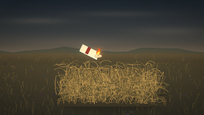
视觉工具实际返回图片 3
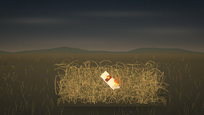
视觉工具实际返回图片 4
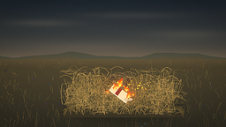
视觉工具实际返回图片 5
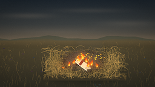
视觉工具实际返回图片 6
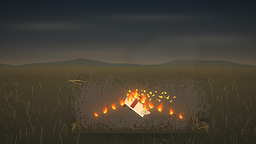
视觉工具实际返回图片 7
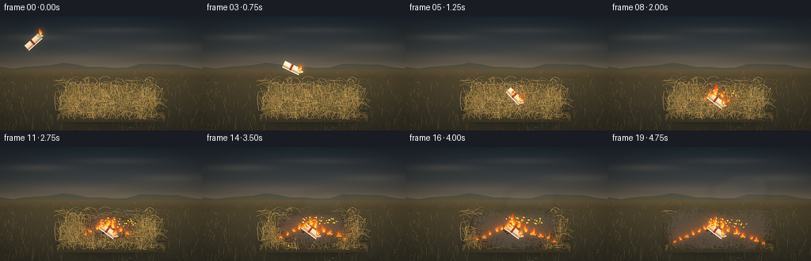
视觉工具实际返回图片 8
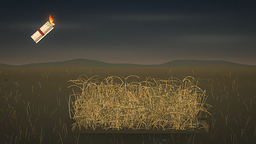
视觉工具实际返回图片 9
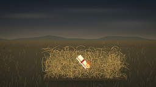
视觉工具实际返回图片 10
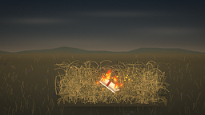
视觉工具实际返回图片 11
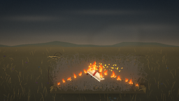
视觉工具实际返回图片 12
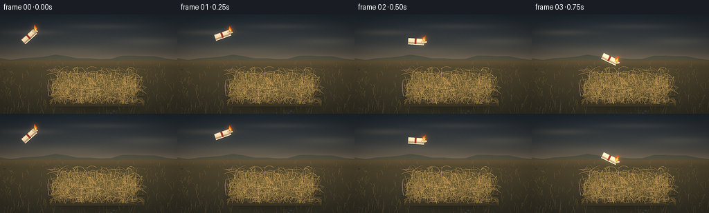
保存候选 2 份；完成命令 11 次；可验证图片返回 12 张。原始 API 响应与完整日志保留在本地。